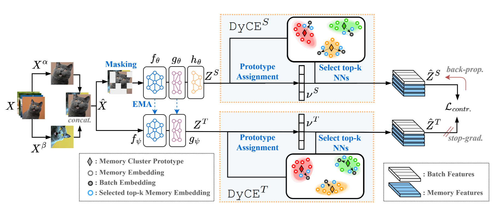

Abstract
Learning quickly from very few labeled samples is a fundamental attribute that separates machines and humans in the era of deep representation learning. Unsupervised few-shot learning (U-FSL) aspires to bridge this gap by discarding the reliance on annotations at training time. Intrigued by the success of contrastive learning approaches in the realm of U-FSL, we structurally approach their shortcomings in both pretraining and downstream inference stages. We propose a novel Dynamic Clustered mEmory (DyCE) module to promote a highly separable latent representation space for enhancing positive sampling at the pretraining phase and infusing implicit class-level insights into unsupervised contrastive learning. We then tackle the, somehow overlooked yet critical, issue of sample bias at the few-shot inference stage. We propose an iterative Optimal Transport-based distribution Alignment (OpTA) strategy and demonstrate that it efficiently addresses the problem, especially in low-shot scenarios where FSL approaches suffer the most from sample bias. We later on discuss that DyCE and OpTA are two intertwined pieces of a novel end-to-end approach (we coin as BECLR), constructively magnifying each other's impact. We then present a suite of extensive quantitative and qualitative experimentation to corroborate that BECLR sets a new state-of-the-art across ALL existing U-FSL benchmarks (to the best of our knowledge), and significantly outperforms the best of the current baselines.
We demonstrate that BECLR sets a new state-of-the-art in ALL established U-FSL benchmarks; e.g. miniImageNet (see Figure), tieredImageNet, CIFAR-FS, FC100, by a significant margin.
Going Beyond Instance-Level Contrastive Learning
In unsupervised contrastive FSL approaches each image within the batch and its augmentations correspond to a unique class, which is an unrealistic assumption. The pitfall here is that potential positive samples present within the same batch might then be repelled in the representation space, hampering the overall performance. We argue that infusing a semblance of class-level insights into the unsupervised contrastive paradigm is essential.
Overview of the proposed pretraining framework of BECLR. Two augmented views of the batch images are both passed through a student-teacher network followed by the DyCE memory module. DyCE dynamically updates and maintains highly separable memory partitions, which enable a more meaningful, beyond instance-level, positive sampling strategy
Dynamic Clustered Memory
DyCE consists of two informational paths: (i) the top-k neighbor selection and batch enhancement path (bottom branch of the Figure), which uses the current state of the memory and stored prototypes and (ii) the iterative memory updating via dynamic clustering path (top branch).

As the training progresses there exists a significant improvement in terms of inter-cluster separation and intra-cluster tightness of the embedding space stored in DyCE. This highly separable embedding space is used for sampling additional positive pairs.
Adressing Sample Bias
In the supervised inference stage of (U-)FSL we have access only to a few labeled (a.k.a support) samples within a few-shot episode which are typically not representative of the larger unlabeled (a.k.a query) set, thus making a swift adaptation to the novel testing classes challenging. We refer to this phenomenon as sample bias, highlighting that it is overlooked by most (U-)FSL baselines.

Overview of the proposed inference strategy of BECLR. To address sample bias, we introduce an iterative distribution alignment add-on module (OpTA) within the supervised inference stage of U-FSL. OpTA imposes no additional learnable parameters, yet efficiently employs optimal transport to align the representations of the labeled support and unlabeled query sets, right before the final supervised inference step.
OpTA pushes the support prototypes much closer to the query distributions (contour centers), effectively diminishing sample bias, resulting in significantly higher accuracy in the corresponding episode.
Paper